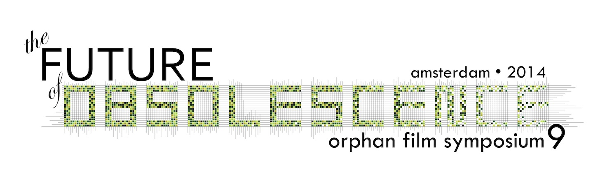

* * * * * * * * * * * * * * * * * * * * * * * * * * * * *

* * * * * * * * * * * * * * * * * * * * * * * * * * * * *
Sunday, March 30:
7:00pm An Eye Opening Reception libations by Haghefilm Digitaal
8:00pm An Evening Film Concert
Greetings from Sandra den Hamer & Giovanna Fossati (EYE), Marijke de Valck (UvA), & Dan Streible (NYU)
Experimental film curator Simona Monizza introduces animated abstract films by Maarten Visser, with new music performed by composer Marcel Worms. Also premiering: commissioned scores by Ron Sadoff's NYU Film Scoring Program students Erica Jung, Aaron Kenny, Massimo Sammi, and Joseph Twist.
Silent film curator Elif Rongen-Kaynakçi presents the world premiere of EYE’s restoration of the feature film East Is West (1922), starring Constance Talmadge. Musical accompaniment by Stephen Horne.
Monday, March 31
9:45am Orphans Orientation on Obsolescence
Outtakes of Josephine Baker Visit Volendam (Fox Movietone, 1928)
Giovanna Fossati Why the Future of Obsolescence?
Dan Streible (NYU) A New Look at an Old Sneeze: Edison Kinetoscopic Record of a Sneeze (W. K. L. Dickson, 1894)
Thomas Elsaesser (UvA) On Obsolescence
11:30am
Transmitting Archival Knowledge
Giovanna Fossati (EYE / UvA) Restoring the Colors of Early Cinema
Julia Noordegraaf (UvA) & Simona Monizza (EYE) Hacking the Bart Vegter Collection
Eef Masson (UvA) moderates a roundtable with the speakers + Bill Brand (NYU MIAP), Snowden Becker (UCLA MIAS), & Martin Koerber (Deutsche Kinemathek)
LUNCH
2pm
Media Archaeology
Susan Aasman (U of Groningen) Staging the Amateur Dispositif, a performance with Andreas Fickers (U of Luxembourg), Tom Slootweg (U of Groningen), Tim van der Heijden & Jo Wachelder (U of Maastricht)
Monika Supruniuk (Academy of Fine Arts, Warsaw) Kazimierz Prószyński and OKO: The first Polish amateur movie camera (1914)
Alexandra Schneider (UvA) Children as Media Archaeologists
4:15pm
Reassemblage
Matt Soar (Concordia U, Montreal) The Lost Leaders Project
Benedict Salazar Olgado (National Film Archives of the Philippines) & Bill Brand (BB Optics) Restoring the Fragments of On the Way to India Consciousness, I Reached China (Henry Francia, 1968)
Walter Forsberg & John Klacsmann (Anthology Film Archives) Technicolor NG (1967)
DINNER
8:15pm
The Helen Hill Award for Independent Filmmaking
Bill Morrison premieres La Trochita (Narrow Gauge) (2014)
Doug Goodwin (Cal Arts) On Illusion, Magic, and Detour de Force (Rebecca Baron, 2014)
Becky Lewis (Columbia, South Carolina) and filmmaker Jodie Mack present the Helen Hill Award and Kodak prize to Werner Nekes
Start (Nekes, 1966) restored by Deutsche Kinemathek & EYE
Franziska Latell (Berlin U of the Arts) On Werner Nekes: Filmmaker and Collector
awardee Werner Nekes talks about Start + demonstrates his collection of optical devices
Tuesday, April 1
9:45am Remarks (and Movies) for the Good of the Order
10am
New Research Networks for Obsolete Media
Mark G. Cooper (U of South Carolina) Metadata and the Future of the Humanities
Karen Cariani (WGBH Archive) Working with Scholars to Improve Access to Media Archives
Mark J. Williams (Dartmouth College) The Media Ecology Project: More and Better Scholarly Access to Historical Media
Scott Curtis (Northwestern U in Qatar) moderator
11:45am
Digital Decay and Remobilization
Bill Morrison introduces Egyptian (Whirling Dervishes) Dancers (Fox Movietone News, 1928)
Evan Meaney (U of South Carolina) de_ca/sia.py: Archival Encryption, Encoding, and Error as Narrative
Heidi Rae Cooley (U of South Carolina) Finding Augusta in a Digital World: The App. + Scott Nixon films [The Other Augustas] (195?)
LUNCH
2pm
When Workers Leave the Factory: Amateur Films in the Eastern Bloc
Chris Wahl (HFF Potsdam) "Grad the Camera, Pal!" The Film Studio of Ironworks Combine Eisenhüttenstadt
Ralf Forster (Filmmuseum Potsdam)Useful Humor and Releasing Laughter: Satirical Shorts in Amateur Cinema of the GDR
Jiří Horníček (Czech National Film Archive) Against the War and Totalitarian Power: Two Examples of Socio-Political Reflection in Amateur Animated Films
Maria Vinogradova (NYU) “Soviet Amateurs Are So Serious”
Katerina Loukopoulou (Panteion U, Athens) moderator
4pm
Transportation Technologies
May Haduong (Academy Film Archive) Aloha Wanderwell: To See the World by Car (1935-37)
Yvonne Zimmermann (Philipps-Universität Marburg) Hans Richter’s Die Eroberung des Himmels (Conquest of the Sky) (1938)
Reto Kromer (reto.ch) In-flight Entertainment: Kodak two-audio track film prints for airlines
Paul Spehr & Mark-Paul Meyer (EYE) Mutoscope and Biograph 68mm films (1897-1902)
8pm
Silent Night with music by
Stephen Horne
Elif Rongen-Kaynakçi & Jeff Lambert (NFPF) Repatriation Report
Ned Thanhouser introduces Clarence Cheats at Croquet (Thanhouser, 1915)
Ron Magliozzi & Peter Williamson (Museum of Modern Art, New York) present rediscovered rushes from the unreleased Darktown Troubles (Biograph, ca. 1914), starring Bert Williams
Jacqueline Stewart (U of Chicago) a segue to A Frontier Post (Fox Varieties, 1925) a day-in-the-life documentary about the “buffalo soldiers” of the U.S. Army’s 10th Cavalry.
Wednesday, April 2
9:45am
Gregorio Rocha (Archivia Films) A Note about the Mexican Revolution
10am
Detritus
Antonia Lant (NYU) on Teclópolis (Can Can Club, 2009)
Charles Musser (Yale U) on Industry’s Disinherited (Unions Films, 1949)
Grover Crisp (Sony Pictures Entertainment) How Death of a Salesman (1951) Became an Orphan Work
+ the never-released
Career of a Salesman (Columbia Pictures, 1951)
FORWARD: The EU Directive for a Registry of Audiovisual Orphan Works
Nicola Mazzanti (Cinémathèque Royale de Belgique), Géraldine Vooren (EYE legal counsel), & Thomas Christensen (ACE / Danish Film Institute), Howard Besser (NYU)
12:00pm
Restorations
Rob Byrne (San Francisco Silent Film Festival) Not Gone but Definitely Forgotten: Resurrecting The Last Edition (1925)
Martin Koerber (Deutsche Kinemathek) & Andrea Krämer (Hochschule für Technik und Wirtschaft, Berlin) Digital Restoration of 1930s Gasparcolor Films
Gary Rhodes (Queen's U Belfast)
LUNCH
2:15pm
Archivos de América Latina
Juana Suárez (Proimágenes Colombia / Fundación Patrimonio Fílmico Colombiano) Outtakes from Gloria Triana’s Yuruparí (FOCINE-Audiovisuales, 1983-86) documenting Colombia’s Afrodescendant and indigenous cultures
Paula Félix-Didier & Andrés Levinson (Museo del Cine, Buenos Aires) Cine Amateur Argentina
. . . .
Caperucita Roja (Little Red Riding Hood, Jorge Mendez Delfino, 1933)
. . . .
Caperucita Roja Inesita (Inés Mendez Delfino, 1960)
. . . .
Perros en paracaidas [Dogs in Parachutes (in Antarctica!)] (Gustavo Giró, 1963)
Mona Jimenez (NYU MIAP APEX) moderator, with Pamela Vizner Oyarce
4:45pm
Eastern European Archives
Elvira Diamanti, Eriona Vyshka, & Andi Lubonja (Albanian Film Archive) with Thomas Logoreci The Albanian Cinema Project: Preserving and Restoring Albania's Cold War Era Cinema (1944-1991)
Elżbieta Wysocka (Filmoteka Narodowa) Restoring the Non-camera Movies and Techniques of Antonisz
DINNER
8:30pm
American Independents
May Haduong (Academy Film Archive) introduces Autumn Spectrum (Hy Hirsh, 1957)
Jeff Lambert (NFPF) introduces the launch of the DVD set Treasures 6: Next Wave Avant-garde, and a 35mm screening of Chicago Loop (James Benning, 1976); restoration by Academy Film Archive and Austrian Film Museum
Frank Scheffer & Paul Cohen introduce their new work Zoetrope People (1980/2014)
Dennis Doros (Milestone Films) & Mary Huelsbeck (Wisconsin Center for Film and Theater Research) Project Shirley: A Joint Rediscovery of Shirley Clarke
Frank Roumen (EYE) emcee